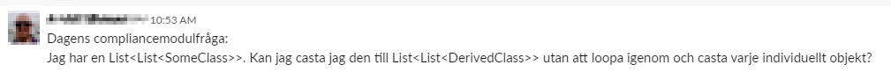
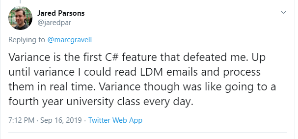

class: center, middle # C# : Covariance and Contravariance  --- <div style="text-align: center;">  </div> --- # Subtyping / Inheritance<sup>1</sup> ## Simple types .cols[ .fifty[ <div style="text-align: center;"> <svg xmlns="http://www.w3.org/2000/svg" xmlns:xlink="http://www.w3.org/1999/xlink" contentScriptType="application/ecmascript" contentStyleType="text/css" height="175px" preserveAspectRatio="none" style="width:90px;height:175px;" version="1.1" viewBox="0 0 90 175" width="90px" zoomAndPan="magnify"><defs><filter height="300%" id="f1xz6zpqt18lum" width="300%" x="-1" y="-1"><feGaussianBlur result="blurOut" stdDeviation="2.0"/><feColorMatrix in="blurOut" result="blurOut2" type="matrix" values="0 0 0 0 0 0 0 0 0 0 0 0 0 0 0 0 0 0 .4 0"/><feOffset dx="4.0" dy="4.0" in="blurOut2" result="blurOut3"/><feBlend in="SourceGraphic" in2="blurOut3" mode="normal"/></filter></defs><g><!--MD5=[7fd4401f5c5cb0e3d029c879cad30c04] class Animal--><rect fill="#FEFECE" filter="url(#f1xz6zpqt18lum)" height="48" id="Animal" style="stroke: #A80036; stroke-width: 1.5;" width="73" x="6" y="8"/><ellipse cx="21" cy="24" fill="#ADD1B2" rx="11" ry="11" style="stroke: #A80036; stroke-width: 1.0;"/><path d="M23.3438,19.6719 L23.5156,19.75 C23.7344,19.4375 23.9375,19.3438 24.2344,19.3438 C24.5313,19.3438 24.8125,19.4844 24.9688,19.75 C25.0625,19.9063 25.0781,20.0313 25.0781,20.4688 L25.0781,21.8906 C25.0781,22.3125 25.0469,22.5 24.9375,22.6563 C24.7656,22.875 24.5,23.0156 24.2344,23.0156 C24.0156,23.0156 23.7813,22.9063 23.6406,22.7656 C23.5,22.6406 23.4688,22.5156 23.4063,22.1094 C23.3125,21.7031 23.1406,21.4844 22.6563,21.2031 C22.1875,20.9531 21.5781,20.7969 21,20.7969 C19.2656,20.7969 18.0156,22.1094 18.0156,23.8906 L18.0156,24.9844 C18.0156,26.6875 19.3125,27.7813 21.3594,27.7813 C22.125,27.7813 22.8125,27.6563 23.2344,27.3906 C23.4219,27.2969 23.4219,27.2969 23.875,26.8125 C24.0625,26.625 24.2656,26.5469 24.4844,26.5469 C24.9531,26.5469 25.3438,26.9375 25.3438,27.3906 C25.3438,27.7813 25.0156,28.2344 24.4375,28.6406 C23.6875,29.1875 22.5313,29.4844 21.3125,29.4844 C18.4219,29.4844 16.3125,27.5938 16.3125,25.0156 L16.3125,23.8906 C16.3125,21.1719 18.3125,19.0938 20.9375,19.0938 C21.8125,19.0938 22.4063,19.2344 23.3438,19.6719 Z "/><text fill="#000000" font-family="sans-serif" font-size="12" lengthAdjust="spacingAndGlyphs" textLength="41" x="35" y="28.1543">Animal</text><line style="stroke: #A80036; stroke-width: 1.5;" x1="7" x2="78" y1="40" y2="40"/><line style="stroke: #A80036; stroke-width: 1.5;" x1="7" x2="78" y1="48" y2="48"/><!--MD5=[454ed48f055567edc734f170f61b4daf] class Dog--><rect fill="#FEFECE" filter="url(#f1xz6zpqt18lum)" height="48" id="Dog" style="stroke: #A80036; stroke-width: 1.5;" width="57" x="14" y="116"/><ellipse cx="29" cy="132" fill="#ADD1B2" rx="11" ry="11" style="stroke: #A80036; stroke-width: 1.0;"/><path d="M31.3438,127.6719 L31.5156,127.75 C31.7344,127.4375 31.9375,127.3438 32.2344,127.3438 C32.5313,127.3438 32.8125,127.4844 32.9688,127.75 C33.0625,127.9063 33.0781,128.0313 33.0781,128.4688 L33.0781,129.8906 C33.0781,130.3125 33.0469,130.5 32.9375,130.6563 C32.7656,130.875 32.5,131.0156 32.2344,131.0156 C32.0156,131.0156 31.7813,130.9063 31.6406,130.7656 C31.5,130.6406 31.4688,130.5156 31.4063,130.1094 C31.3125,129.7031 31.1406,129.4844 30.6563,129.2031 C30.1875,128.9531 29.5781,128.7969 29,128.7969 C27.2656,128.7969 26.0156,130.1094 26.0156,131.8906 L26.0156,132.9844 C26.0156,134.6875 27.3125,135.7813 29.3594,135.7813 C30.125,135.7813 30.8125,135.6563 31.2344,135.3906 C31.4219,135.2969 31.4219,135.2969 31.875,134.8125 C32.0625,134.625 32.2656,134.5469 32.4844,134.5469 C32.9531,134.5469 33.3438,134.9375 33.3438,135.3906 C33.3438,135.7813 33.0156,136.2344 32.4375,136.6406 C31.6875,137.1875 30.5313,137.4844 29.3125,137.4844 C26.4219,137.4844 24.3125,135.5938 24.3125,133.0156 L24.3125,131.8906 C24.3125,129.1719 26.3125,127.0938 28.9375,127.0938 C29.8125,127.0938 30.4063,127.2344 31.3438,127.6719 Z "/><text fill="#000000" font-family="sans-serif" font-size="12" lengthAdjust="spacingAndGlyphs" textLength="25" x="43" y="136.1543">Dog</text><line style="stroke: #A80036; stroke-width: 1.5;" x1="15" x2="70" y1="148" y2="148"/><line style="stroke: #A80036; stroke-width: 1.5;" x1="15" x2="70" y1="156" y2="156"/><!--MD5=[5037e5108ae860e34ac250b7d2b84c09] reverse link Animal to Dog--><path d="M42.5,76.0236 C42.5,89.5792 42.5,104.0381 42.5,115.6784 " fill="none" id="Animal<-Dog" style="stroke: #A80036; stroke-width: 1.0;"/><polygon fill="none" points="35.5001,76.0005,42.5,56,49.5001,76.0004,35.5001,76.0005" style="stroke: #A80036; stroke-width: 1.0;"/><!--MD5=[f75a32b983c09608b8a8e689a0cf27d9] @startuml class Animal class Dog Animal <|-down- Dog @enduml PlantUML version 1.2019.11(Sun Sep 22 10:02:15 UTC 2019) (GPL source distribution) Java Runtime: Java(TM) SE Runtime Environment JVM: Java HotSpot(TM) 64-Bit Server VM Java Version: 1.7.0_25-b15 Operating System: Linux Default Encoding: UTF-8 Language: en Country: US --> </g></svg> </div> ] .fifty[ ] ] * Models **is-a** relationships * **Sub types** can replace **super types** without altering program correctness<sup>2</sup> <sup><sub><sub>1</sub></sub></sup> <sub><sub>Strictly speaking subtyping and inheritance is not exactly the same thing but close enough for this presentation</sub></sub><br/> <sup><sub><sub>2</sub></sub></sup> <sub><sub>Liskov(-ish) Substitution Principle</sub></sub> --- # Subtyping - Type conversions ### Implicit ```csharp Animal animal = new Dog(); ``` ### Explicit (might fail) ```csharp Animal animal; Dog dog = (Dog)animal; ``` --- # Subtyping - Complex types ## Lists What if **`List<Dog>`** is a subtype to **`List<Animal>`**? <sup>1</sup> ```csharp List<Animal> animals = new List<Dog>(); // ??? ``` **Read** works fine... 👍 ```csharp foreach(Animal animal in animals) { // Each dog can be treated as an animal. } ``` **Write**... not so much... 👎 ```csharp animals.Add(new Cat()); // Should not be able to insert a Cat in a Dog list ``` <sup><sub><sub>1</sub></sub></sup> <sub><sub>This is called **covariance**. Type relationship is maintained.</sub></sub> --- # Subtyping - Complex types ## Lists What if **`List<Animal>`** is a subtype to **`List<Dog>`**? <sup>1</sup> ```csharp List<Dog> dogs = new List<Animal>(); // ??? ``` **Write** works fine... 👍 ```csharp dogs.Add(new Dog()); // A dog is an animal and can be inserted ``` **Read**... not so much... 👎 ```csharp foreach(Dog dog in dogs) { // Every animal is not a dog } ``` <sup><sub><sub>1</sub></sub></sup> <sub><sub>This is called **contravariance**. Type relationship is reversed.</sub></sub> --- # Subtyping - Complex types ## Lists In C# **`List<Dog>`** is not related to **`List<Animal>`**. List types are **invariant** and no conversion (neither implicit nor explicit) exists. * **Read+Write** data structures should be **invariant**.<sup>1</sup> * **Read only** data structures can be **covariant**. * **Write only** data structures can be **contravariant**. <sup><sub><sub>1</sub></sub></sup> <sub><sub>Arrays are covariant in C# for historic reasons. This is not type safe though.</sub></sub> --- # Subtyping - Complex types ## Enumerations **`IEnumerable<T>`** is a *read-only* representation of a **`List<T>`**. Thus the problematic *write* case goes away. ```csharp IEnumerable<Animal> animals = new List<Dog>(); ``` This works fine... 👍 because **`List<Dog>`** implements **`IEnumerable<Dog>`** and... **`IEnumerable<Dog>`** is a subtype of **`IEnumerable<Animal>`** since... **`IEnumerable<T>`** is covariance in **`T`**. --- # Subtyping - Complex types ## Actions **`Action<T>`** is contravariant in **`T`**. ```csharp class Animal { } class Dog : Animal { public void Pet() {} } class Bulldog : Dog { } Action<Dog> beNiceToDog = dog => dog.Pet(); ``` If covariant this would work ```csharp Action<Animal> beNiceToAnimal = beNiceToDog; beNiceToAnimal(new Fish()); // Cannot pet animals in general ``` Due to contravariance, this works however ```csharp Action<Bulldog> beNiceToBulldog = beNiceToDog; beNiceToBulldog(new Bulldog()); // Bulldogs are dogs so this works ``` --- # Variance Conversion "Upcast" works... ```csharp IEnumerable<Dog> dogs; IEnumerable<Animal> animals = dogs; ``` ...but how about "downcast"? ```csharp IEnumerable<Animal> animals; IEnumerable<Dog> dogs = (IEnumerable<Dog>)animals; ``` Does not work. 👎 --- # Variance Conversion (continued) C# does not follow covariance (nor contravariance) all the way. Variant types are converted according to the specific rules of **variance conversion**. For **`A<S>`** to be *variant convertable* to **`A<T>`** it is required that **`S`** can be *implicitly converted* to **`T`**. Probable motive; cast can be expensive or hard to prove. ```csharp IEnumerable<Animal> animals = new List<Animal> { ..., // long list of dogs new Cat() }; IEnumerable<Dog> dogs = (IEnumerable<Dog>)animals; ``` --- # C# syntax ### Covariance Covariant type parameters are declared using the **out** keyword. ```csharp public interface IEnumerable<out T> ... ``` ### Contravariance Contravariant type parameters are declared using the **in** keyword. ```csharp public delegate void Action<in T>(T obj); ``` --- # Back to the question This does not work. Lists are invariant. 👎 ```csharp List<List<Derived>> derived = new List<List<Derived>>(); List<List<Base>> @base = derived; ``` This does not work because variance conversion requires implicit conversion from **`Derived`** to **`Base`**. 👎 ```csharp List<List<Derived>> derived = new List<List<Derived>>(); IEnumerable<IEnumerable<Base>> @base = (IEnumerable<IEnumerable<Base>>)derived; ``` Upcast works though. **`IEnumerable<Derived>`** is variance convertable to **`IEnumerable<Base>`**. 👍 ```csharp IEnumerable<IEnumerable<Derived>> derived = new List<List<Derived>>(); IEnumerable<IEnumerable<Base>> @base = derived; ```